Forrest Gump
"Cours Forrest cours"
Présentaion
Forrest Gump est un film américain produit en 1994, réalisé par Robert Zemeckis, d’une durée de 2 heures et 22 minutes. Ce long métrage raconte la vie extraordinaire de Forrest Gump, un homme simple au cœur pur, témoin et acteur involontaire des grands événements de l’histoire américaine du XXe siècle. L’œuvre provient de la société Paramount Pictures, qui en détient les droits après avoir acquis le roman original de Winston Groom. Le film a été commandité et produit par Wendy Finerman, Steve Starkey et Steve Tisch. Réalisé en 35 mm avec des effets spéciaux numériques novateurs d’Industrial Light & Magic, il allie techniques traditionnelles de tournage et intégration numérique pionnière pour insérer le personnage principal dans des images d’archives historiques.

Oscars (Academy Awards, 1995) – 6 récompenses
Golden Globes (1995) – 3 récompenses
BAFTA Awards (Royaume-Uni, 1995) – 1 récompense
People’s Choice Awards (1995)
Mouvement Artistique
Le mouvement postmoderne au cinéma se caractérise par le mélange des styles, l’ironie, la nostalgie et l’usage de nouvelles technologies pour revisiter l’histoire ou la culture populaire. Il remet en question les récits classiques en proposant des histoires moins linéaires et plus réfléchies sur la société. Forrest Gump illustre bien ce mouvement. Le film combine comédie, drame, romance et film historique pour raconter l’histoire des États-Unis à travers un personnage simple et sincère. En utilisant des effets spéciaux pour insérer Forrest dans de vraies images d’époque, le film brouille la frontière entre réalité et fiction, une idée typiquement postmoderne. Il rend hommage à la culture américaine tout en la montrant avec humour et émotion, ce qui fait de Forrest Gump une œuvre représentative de ce courant.
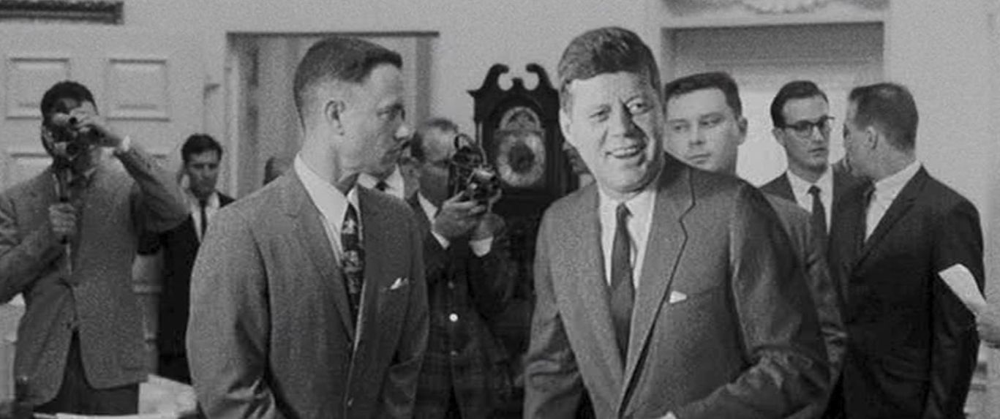 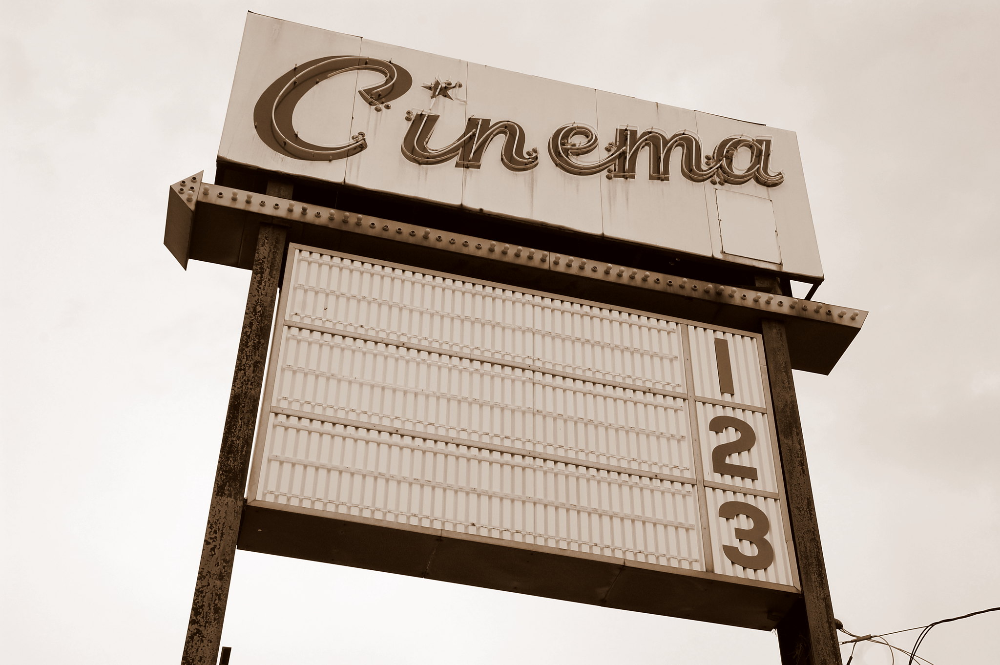Lieux
Les lieux dans Forrest Gump jouent un rôle essentiel, car ils accompagnent l’évolution du personnage et symbolisent les différentes étapes de sa vie et de l’histoire américaine. Voici les lieux les plus emblématiques du film :
1. Savannah, en Géorgie (le banc de Forrest sur Chippewa Square)
Lieu du célèbre banc où Forrest raconte sa vie, symbole de la simplicité et du passage du temps.
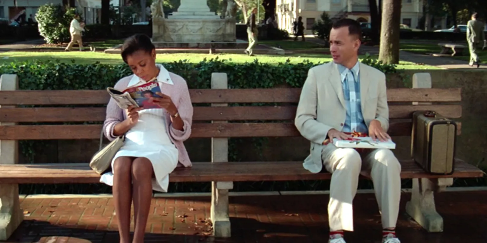2. Monument Valley, Utah (la longue course à travers le pays)
Décor naturel impressionnant où Forrest termine sa course, représentant la liberté et la persévérance.
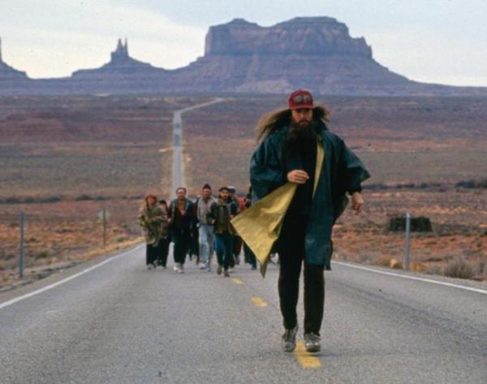3. Washington D.C. (le discours au Lincoln Memorial)
Lieu du discours au Lincoln Memorial, marquant la rencontre entre le destin personnel de Forrest et l’histoire nationale.
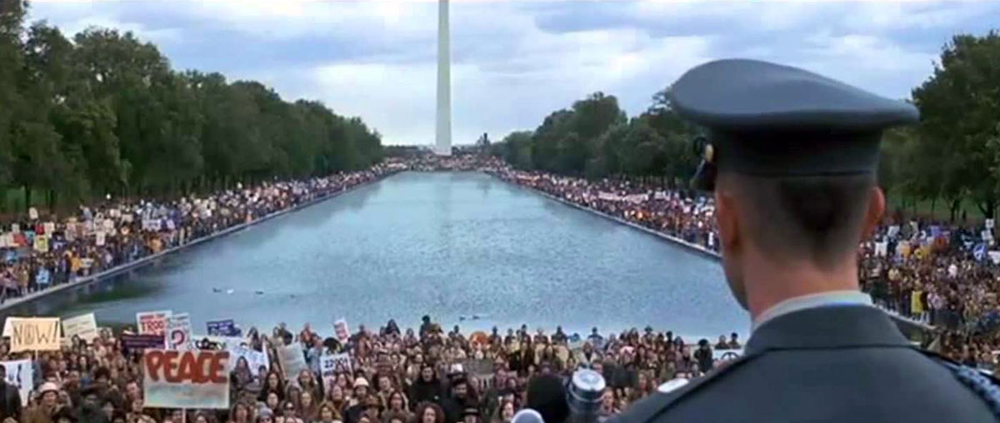4. Beaufort, Caroline du Sud (la ville fictive de Greenbow, Alabama)
Utilisée pour représenter Greenbow, la ville natale de Forrest, reflet de ses racines et de son innocence.
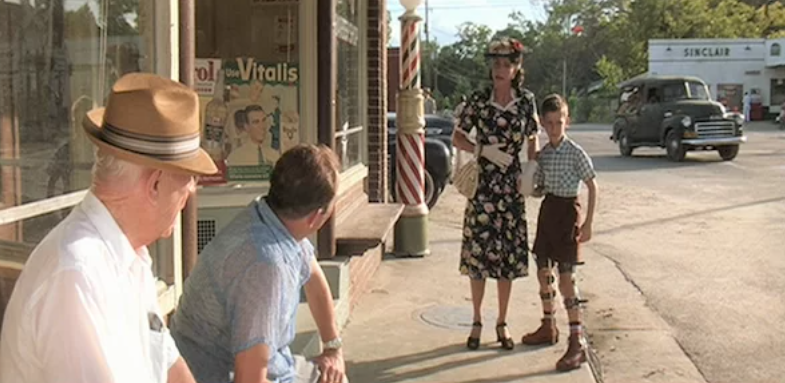5. Bayou La Batre, Alabama (le lieu de la pêche aux crevettes)
Port de pêche où Forrest fonde son entreprise de crevettes, symbole de réussite et de travail acharné.
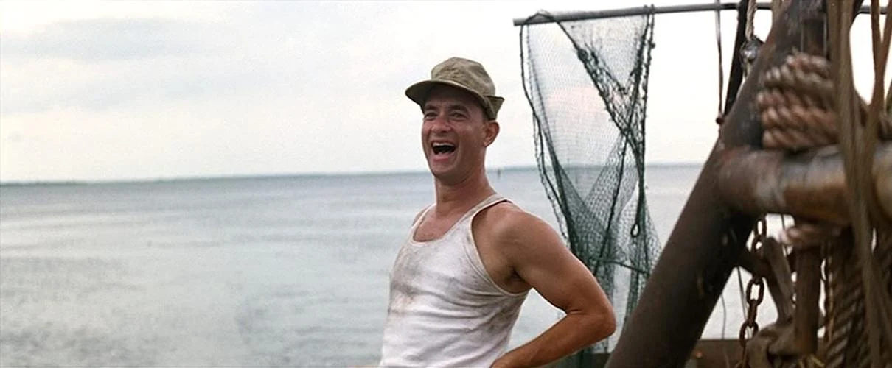Lieux à visiter
Le succès de Forrest Gump a donné naissance à plusieurs lieux de visite devenus emblématiques pour les fans du film. Ces endroits permettent de revivre certaines scènes cultes et de découvrir les paysages qui ont marqué l’histoire du cinéma. Plusieurs musées conservent aussi des objets et souvenirs liés au tournage. Voici les principaux lieux associés au film :
1. Chippewa Square (Savannah, Géorgie)
Célèbre pour la scène du banc où Forrest raconte son histoire, symbole du temps qui passe et du destin.
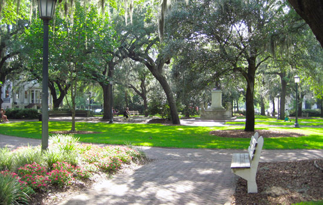2. Savannah History Museum
Conserve le banc original du film, devenu une pièce de collection très visitée par les fans.
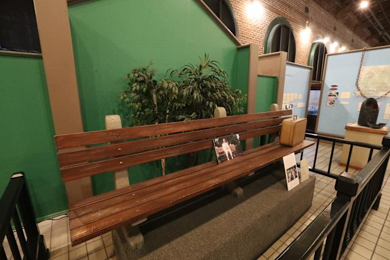3. Beaufort (Caroline du Sud)
Utilisée pour représenter Greenbow, la ville natale de Forrest, elle évoque la simplicité et les origines du personnage.
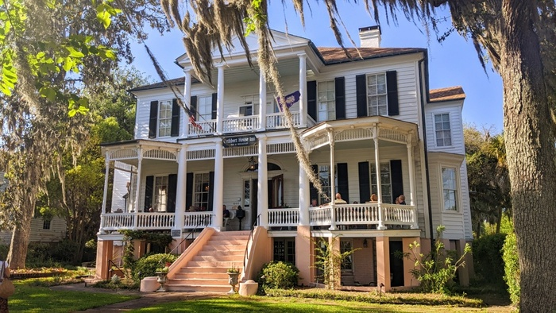4. Monument Valley (Utah)
Décor naturel majestueux où Forrest met fin à sa longue course, symbole de liberté et de dépassement de soi.

5. Lincoln Memorial (Washington D.C.)
Lieu historique du discours de Forrest, marquant son lien avec les grands événements américains.
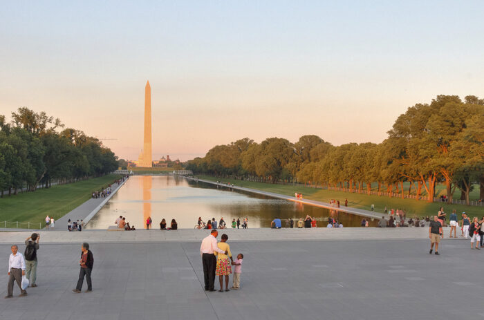6. Studios Paramount (Los Angeles)
Plusieurs scènes intérieures y ont été tournées, témoignant du savoir-faire technique du cinéma hollywoodien.
7. Bubba Gump Shrimp Co.
Restaurants inspirés du film, offrant une expérience ludique et gourmande autour du thème de la pêche aux crevettes.

Oeuvres portants sur forrest gump
Plusieurs œuvres et productions se sont inspirées de Forrest Gump ou ont prolongé son univers, témoignant de son impact culturel et artistique. Voici les plus emblématiques :
Le roman Forrest Gump de Winston Groom (1986)
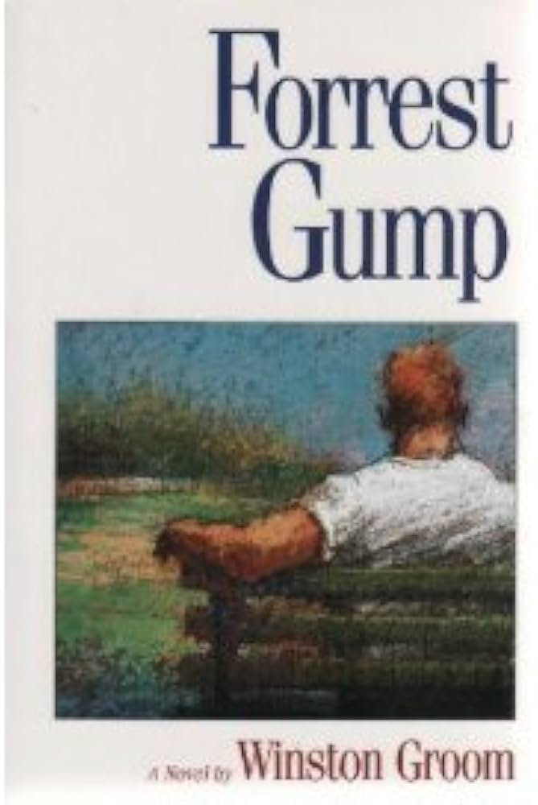Le roman Gump & Co. (1995), suite littéraire écrite par Winston Groom
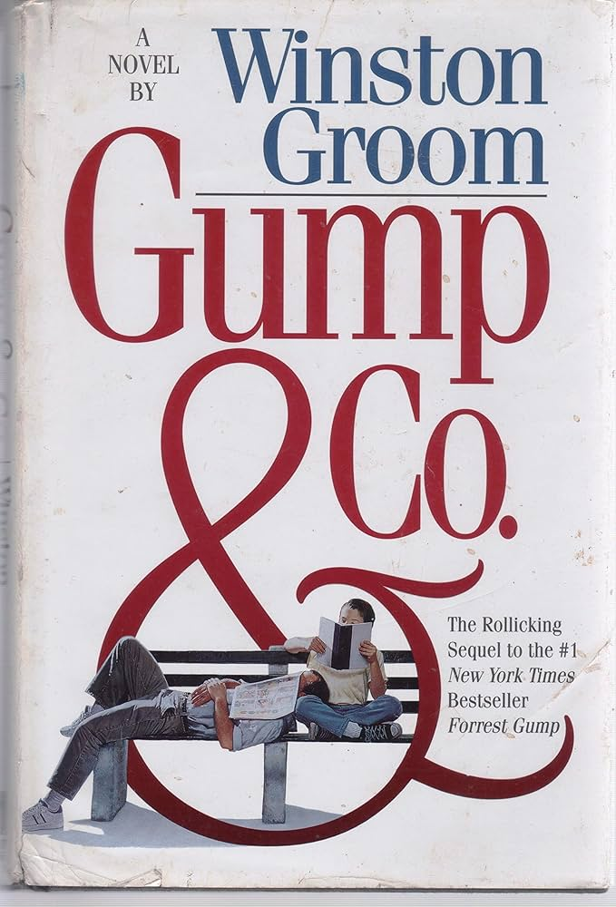Le documentaire Through the Eyes of Forrest Gump (1994), sur les coulisses du film
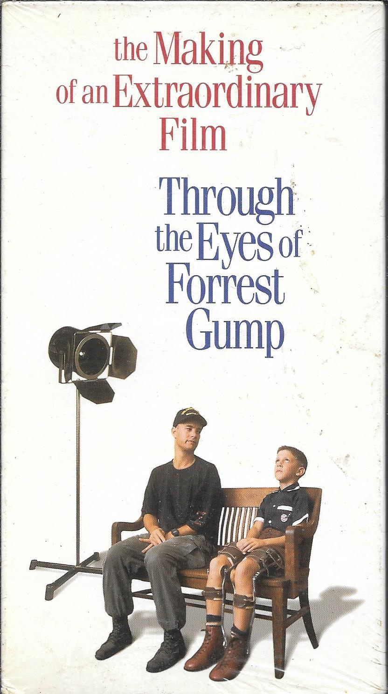Galerie de photos
Pour mieux illustrer l’univers du film et ses scènes les plus marquantes, une galerie de photos permet de plonger au cœur de Forrest Gump. Elle retrace les moments emblématiques du personnage, les lieux de tournage et les images devenues cultes au fil du temps. Voici une sélection des plus représentatives.